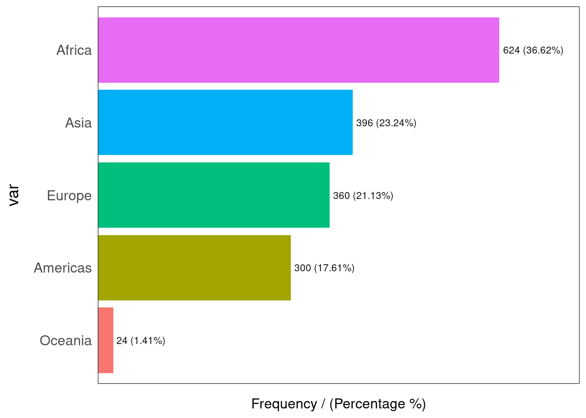
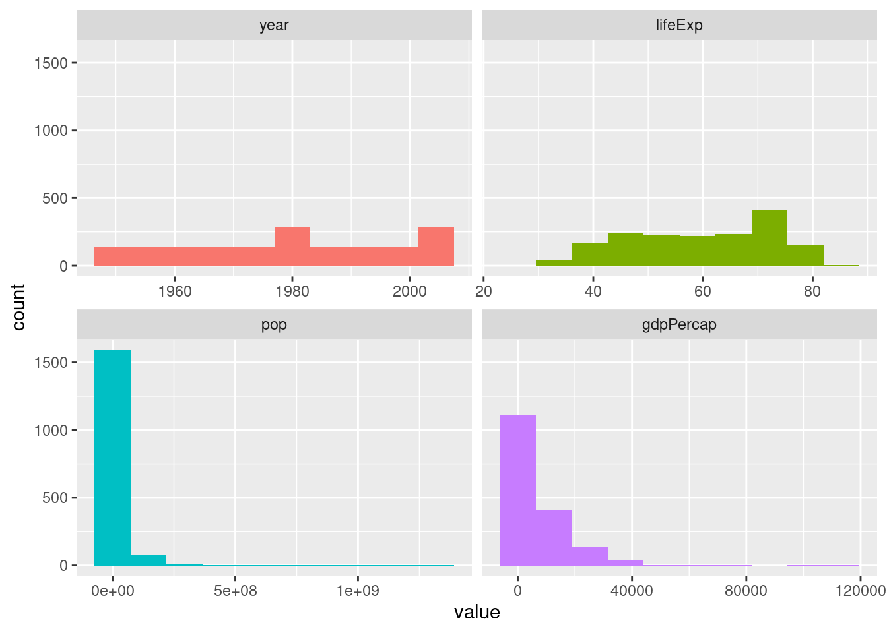
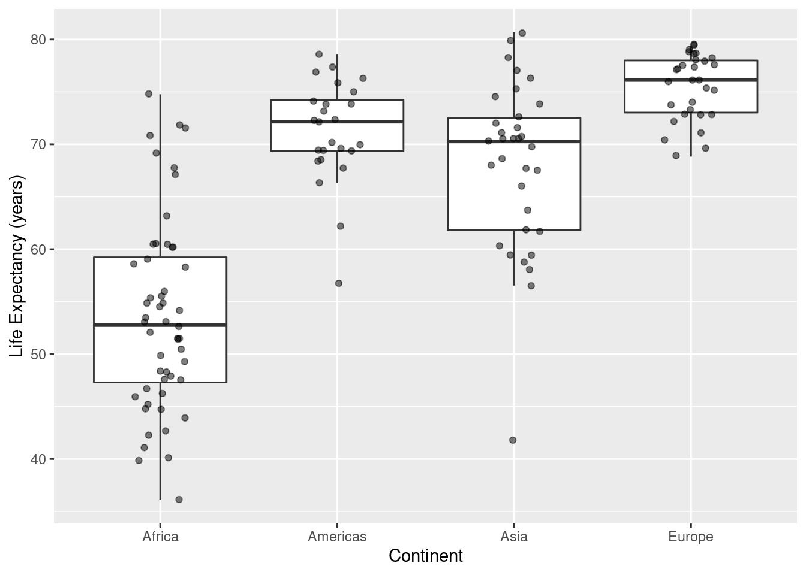

Chapter 7 Exploratory Data Analysis For One Quantitative Variable: by Groups
It is often helpful to create data summaries of a quantitative variable for each level of a grouping variable.
7.1 Summary Statistics: dplyr
Using dplyr and tidyverse for summary statistics across the levels of a group variable (of type factor/categorical) requires the use of the verb group_by. Here we produce summary statistics of life expectancy across the levels of continent.
# Output presented in initial continent order (alphabetic)
gapminder %>% filter(year==1997) %>%
filter(continent != "Oceania") %>%
group_by(continent) %>%
summarise(meanLE=mean(lifeExp,na.rm=TRUE),
medLE=median(lifeExp,na.rm=TRUE),
sd=sd(lifeExp,na.rm=TRUE),
iqr=IQR(lifeExp,na.rm=TRUE),
Q1=quantile(lifeExp, probs=0.25,na.rm=TRUE),
Q3=quantile(lifeExp,probs=0.75),
n=n())## # A tibble: 4 x 8
## continent meanLE medLE sd iqr Q1 Q3 n
## <fct> <dbl> <dbl> <dbl> <dbl> <dbl> <dbl> <int>
## 1 Africa 53.6 52.8 9.10 11.9 47.3 59.2 52
## 2 Americas 71.2 72.1 4.89 4.83 69.4 74.2 25
## 3 Asia 68.0 70.3 8.09 10.7 61.8 72.5 33
## 4 Europe 75.5 76.1 3.10 4.97 73.0 78.0 30#
# Output rows ordered by decreasing values of a statistic (mean Life Expectancy):
gapminder %>% filter(year==1997) %>%
filter(continent != "Oceania") %>%
group_by(continent) %>%
summarise(meanLE=mean(lifeExp,na.rm=TRUE),
medLE=median(lifeExp,na.rm=TRUE),
sd=sd(lifeExp,na.rm=TRUE),
iqr=IQR(lifeExp,na.rm=TRUE),
min=min(lifeExp),
max=max(lifeExp),
n=n()) %>%
arrange(desc(meanLE))## # A tibble: 4 x 8
## continent meanLE medLE sd iqr min max n
## <fct> <dbl> <dbl> <dbl> <dbl> <dbl> <dbl> <int>
## 1 Europe 75.5 76.1 3.10 4.97 68.8 79.4 30
## 2 Americas 71.2 72.1 4.89 4.83 56.7 78.6 25
## 3 Asia 68.0 70.3 8.09 10.7 41.8 80.7 33
## 4 Africa 53.6 52.8 9.10 11.9 36.1 74.8 52Next, we save the statistics table to an object called statstable, then we use the kable function for display.
statstable <- gapminder %>% filter(year==1997) %>%
filter(continent != "Oceania") %>%
group_by(continent) %>%
summarise(meanLE=mean(lifeExp,na.rm=TRUE),
medLE=median(lifeExp,na.rm=TRUE),
sd=sd(lifeExp,na.rm=TRUE),
iqr=IQR(lifeExp,na.rm=TRUE),
min=min(lifeExp),
max=max(lifeExp),
n=n()) %>%
arrange(desc(meanLE))
#
knitr::kable(statstable)| continent | meanLE | medLE | sd | iqr | min | max | n |
|---|---|---|---|---|---|---|---|
| Europe | 75.50517 | 76.116 | 3.104677 | 4.96625 | 68.835 | 79.390 | 30 |
| Americas | 71.15048 | 72.146 | 4.887584 | 4.83500 | 56.671 | 78.610 | 25 |
| Asia | 68.02052 | 70.265 | 8.091171 | 10.68100 | 41.763 | 80.690 | 33 |
| Africa | 53.59827 | 52.759 | 9.103387 | 11.92825 | 36.087 | 74.772 | 52 |
7.2 Summary Statistics: skimr
Here we implement the group_by function to display descriptive statistics for numeric variables by continent, for two quantitative variables using functions from the skimr package.
gapminder %>% filter(year==1997) %>%
filter(continent != "Oceania") %>%
group_by(continent) %>%
skimr::skim_without_charts() %>%
skimr::yank("numeric") %>%
dplyr::filter(skim_variable %in% c("lifeExp","gdpPercap")) %>%
knitr::kable()| skim_variable | continent | n_missing | complete_rate | mean | sd | p0 | p25 | p50 | p75 | p100 |
|---|---|---|---|---|---|---|---|---|---|---|
| lifeExp | Africa | 0 | 1 | 53.59827 | 9.103387 | 36.0870 | 47.30025 | 52.759 | 59.22850 | 74.772 |
| lifeExp | Americas | 0 | 1 | 71.15048 | 4.887584 | 56.6710 | 69.38800 | 72.146 | 74.22300 | 78.610 |
| lifeExp | Asia | 0 | 1 | 68.02052 | 8.091171 | 41.7630 | 61.81800 | 70.265 | 72.49900 | 80.690 |
| lifeExp | Europe | 0 | 1 | 75.50517 | 3.104677 | 68.8350 | 73.02350 | 76.116 | 77.98975 | 79.390 |
| gdpPercap | Africa | 0 | 1 | 2378.75956 | 2820.728117 | 312.1884 | 791.90197 | 1179.883 | 2856.38603 | 14722.842 |
| gdpPercap | Americas | 0 | 1 | 8889.30086 | 7874.225145 | 1341.7269 | 4684.31381 | 7113.692 | 9767.29753 | 35767.433 |
| gdpPercap | Asia | 0 | 1 | 9834.09330 | 11094.180481 | 415.0000 | 1902.25210 | 3645.380 | 19702.05581 | 40300.620 |
| gdpPercap | Europe | 0 | 1 | 19076.78180 | 10065.457716 | 3193.0546 | 9946.59931 | 19596.499 | 27189.53031 | 41283.164 |
7.3 Graphical Displays of a quantitative variable, separated by groups
In each example, the first lines create the dataset to be graphed - followed by a ggplot command making the display. Several of the examples make use of the principle of “small-multiples” so that each level of the factor variable has a separarate panel for the quantitative variable display.
7.3.1 Dotplots
ds <- gapminder %>% filter(year==1997)
#
ggplot(data=ds,mapping=aes(x=lifeExp)) +
geom_dotplot() +
facet_wrap( ~ continent,ncol=2) +
xlab("Life Expectancy (years)") +
ylab("Frequency")
7.3.2 Histograms
ds <- gapminder %>%
filter(year==1997) %>%
filter(continent != "Oceania") %>%
group_by(continent)
#
ggplot(data=ds, mapping=aes(x=lifeExp)) +
geom_histogram(binwidth=5) +
facet_wrap( ~ continent,ncol=2) +
xlab("Life Expectancy (years)") +
ylab("Frequency")7.3.3 Density Plots in Facets
The code given here shows how to produce a density plot in separate panels for each continent.
ds <- gapminder %>%
filter(year==1997) %>%
filter(continent != "Oceania") %>%
group_by(continent)
#
ggplot(data=ds, mapping=aes(x=lifeExp, colour=continent, fill=continent)) +
geom_density(alpha = 0.35) +
xlab("Life Expectancy (years)") +
ylab("Density") +
facet_wrap( ~ continent, ncol = 2) +
theme(legend.position = "none")7.3.4 Overlaid Density Plots
The initial command below takes the gapminder data and consider only observations (rows) from 1997, but exclude all observations from Oceania. The alpha setting controls the amount of transparency in the densities for each continent - smaller values of alpha (between 0 and 1) are more transparent.
gapminder %>%
filter(year==1997) %>%
filter(continent != "Oceania") %>%
group_by(continent) %>%
ggplot(mapping=aes(x=lifeExp, colour=continent, fill=continent)) +
geom_density(alpha = 0.35) +
xlab("Life Expectancy (years)") +
ylab("Density")
7.3.5 Boxplots, Grouped Data
In the code below, the alpha value again controls the transparency of the points alpha=1 means opaque, alpha=0 means completely see-through. When there is a lot of data, use a smaller value of alpha.
ds <- gapminder %>%
filter(year==1997) %>%
filter(continent != "Oceania") %>%
group_by(continent)
#
ggplot(data=ds, mapping=aes(x=continent,y=lifeExp)) +
geom_boxplot() +
labs(x="Continent",y="Life Expectancy (years)")
#
ggplot(data=ds, mapping=aes(x=continent,y=lifeExp)) +
geom_boxplot(outlier.colour = NA) +
geom_point(position = position_jitter(width = 0.15, height = 0.15),alpha=.50) +
labs(x="Continent",y="Life Expectancy (years)")
7.3.6 Boxplots, overlay points on the boxplots with color control
In the code below, the alpha value controls the transparency of the points alpha=1 means opaque, alpha=0 means completely see-through.
ds <- gapminder %>%
filter(year==1997) %>%
filter(continent != "Oceania") %>%
group_by(continent)
#
ggplot(data=ds, mapping=aes(x=continent,y=lifeExp, colour=continent)) +
geom_point(position = position_jitter(width = 0.2, height = 0.2),alpha=.25) +
geom_boxplot(outlier.colour = NA, fill = NA) +
labs(x="Continent",y="Life Expectancy (years)")
#
ggplot(data=ds, mapping=aes(x=continent,y=lifeExp, colour=continent)) +
geom_point(position = position_jitter(width = 0.2, height = 0.2),alpha=.80) +
geom_boxplot(outlier.colour = NA, fill = NA) +
labs(x="Continent",y="Life Expectancy (years)")